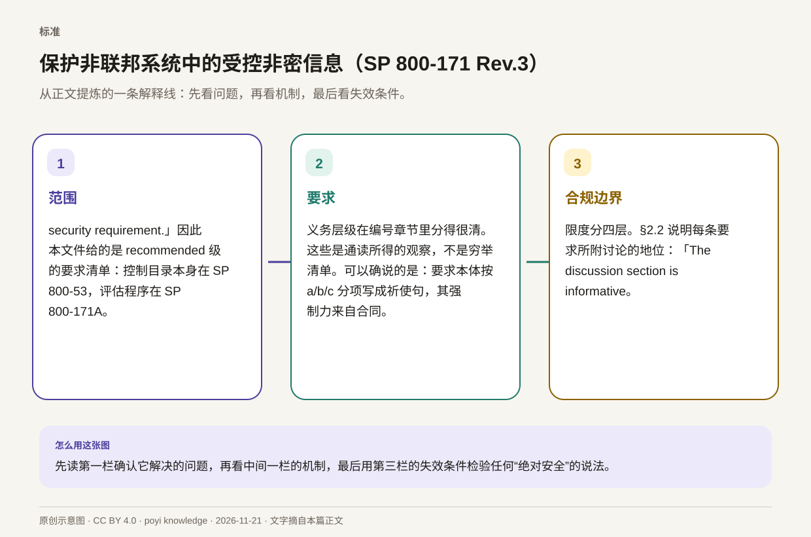
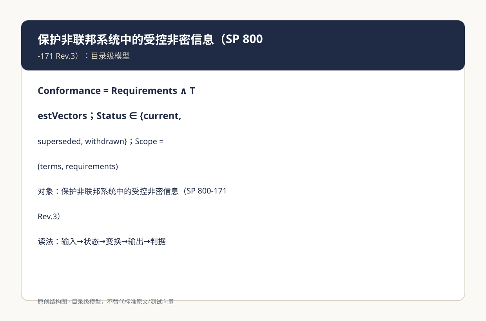

原理与机制
标准：保护非联邦系统中的受控非密信息（SP 800-171 Rev.3）（Protecting Controlled Unclassified Information in Nonfederal Systems and Organizations (SP 800-171 Rev.摘要首句同时给出受文者、力度与对象：「This publication provides federal agencies with recommended security requirements for protecting the confidentiality of CUI when the information is resident in nonfederal systems and organizations.」次句把适用面收到组件一级：「The requirements apply to components of nonfederal systems that process, store, or transmit CUI or that provide protection for such components.」第三句规定它的用法是进合同而非直接生效：「The security requirements are intended for use by federal agencies in contractual vehicles or other agreements established between those agencies and nonfederal organizations.」末句把评估步骤另交配套文件：「This publication can be used in conjunction with its companion publication, NIST Special Publication 800-171A, which provides a comprehensive set of procedures to assess the security requirements.」关键词行按序列出主题词，含「organization-defined parameter; security assessment; security control; security requirement.」因此本文件给的是 recommended 级的要求清单：控制目录本身在 SP 800-53，评估程序在 SP 800-171A。

为什么重要
缺口写在第 1 节的因果链里：责任不因共享而转移，「The responsibility of federal agencies to protect CUI does not change when such information is shared with nonfederal organizations.」于是需要等价保护，而等价保护有硬前提：「To maintain a consistent level of protection, the security requirements for safeguarding CUI in nonfederal systems and organizations must comply with Federal Information Processing Standards (FIPS 199) publication [6] and FIPS 200 [7].」要求并非新造，而是从控制集裁剪：「The requirements are derived from the controls in NIST Special Publication (SP) 800-53 [8].」与「SP 800-171 security requirements represent a subset of the controls that are necessary to protect the confidentiality of CUI.」基线档位出自脚注 11，但同一条脚注立刻让位于上位规定：「In accordance with 32 CFR 2002 [5], CUI is categorized at no less than the FIPS 199 [6] moderate confidentiality impact value.However, when federal law, regulation, or government-wide policy establishing the control of CUI specifies controls that differ from those of the moderate control baseline, then the applicable law, regulation, or government-wide policy is followed.」中等档因此是这份副本设下的下限，不是不可改动之规定。这些句子合起来的理由是：CUI 落到非联邦系统后既不能降级也无现成清单，于是把中等基线按保密目的裁剪成一份可入合同的要求集。
应用与实例
义务层级在编号章节里分得很清。§1.1 划出谁受约束：「The security requirements in this publication are only applicable to components of nonfederal systems that process, store, or transmit CUI or that provide protection for such components.」并指明申说对象：「The requirements are intended for use by federal agencies in contractual vehicles or other agreements that are established between those agencies and nonfederal organizations.」§2.2 为组织定义参数留下的 must 不止一句，动作都落在非联邦组织：正文一句「If a federal agency or a consortium of agencies do not specify a particular value or range of values for an ODP, nonfederal organizations must assign the value or values to complete the security requirement.」脚注 14 又一句「NIST does not establish or assign values for ODPs.If ODP values for selected security requirements are not formally established or assigned by a federal agency or a consortium of federal agencies, nonfederal organizations must assign those values to complete the requirements.」§3 只说明本章的内容与命名方式：「This section describes 17 families of security requirements for protecting the confidentiality of CUI in nonfederal systems and organizations.」以及「Not all security requirements mention CUI explicitly.」§3.1 的条目按 a/b/c 分项写成祈使句，例如账户管理第二项：「Create, enable, modify, disable, and remove system accounts in accordance with policy, procedures, prerequisites, and criteria.」即 must 在本副本里并非只落在补 ODP 值与联邦符合这两处：§2.2 之内已印出两句，第 3 章的讨论段也用它写系统能力（03.03.01 事件日志的讨论说，组织可能判定系统必须有记录每一次文件访问的能力，只因性能负担而在特定情形下才启用），Authority 段另用 shall。这些是通读所得的观察，不是穷举清单。可以确说的是：要求本体按 a/b/c 分项写成祈使句，其强制力来自合同。

边界与攻击面
限度分四层。§2.2 说明每条要求所附讨论的地位：「The discussion section is informative, not normative.」其下一句紧接理由：「It is not intended to extend the scope of a requirement or influence the solutions that organizations may use to satisfy a requirement.」§1.1 排除一类主体：「The requirements do not apply to nonfederal organizations that are collecting or maintaining information on behalf of a federal agency or using or operating a system on behalf of an agency.」§3 承认部分系统套不全：「Some systems, including specialized systems (e.g., industrial/process control systems, medical devices, computer numerical control machines), may have limitations on the application of certain security requirements.」Authority 段划出国家安全系统的条件适用：「such standards and guidelines shall not apply to national security systems without the express approval of appropriate federal officials exercising policy authority over such systems.」附录 E 又限定这份副本本身：「The current release of this publication does not include any errata updates.」四层各不同：讨论段不产生义务，代管信息的组织另按 FISMA 处理，专用系统以系统安全计划记持久例外，国家安全系统须明示批准。
历史与背景
门面板块按本份文本连读为「NIST Special Publication 800 NIST SP 800-171r3」（此处的编号重复是抽取所致），标题行「Protecting Controlled Unclassified Information in Nonfederal Systems and Organizations」，作者行「Ron Ross Victoria Pillitteri」，部门行「Computer Security Division Information Technology Laboratory」，页眉行给出日期「NIST SP 800-171r3 May 2024」；免费获取行是「This publication is available free of charge from:」，其后是 DOI 10.6028/NIST.SP.800-171r3。出版史块给出评审与取代关系：「Approved by the NIST Editorial Review Board on 2024-04-23 Supersedes NIST Special Publication 800-171r2 (February 2020; Includes updates as of 01-28-2021)」，引用行给出两位作者与年份：「Ross R, Pillitteri V (2024) Protecting Controlled Unclassified Information in Nonfederal Systems and Organizations.(National Institute of Standards and Technology, Gaithersburg, MD), NIST Special Publication (SP) NIST SP 800-171r3.」致谢页点名技术编辑与制作人员「Jim Foti, Jeff Brewer, Eduardo Takamura, Isabel Van Wyk, Cristina Ritfeld, Derek Sappington, and Carolyn Schmidt」，并另谢 Kelley Dempsey 的早期 CUI overlay 研究。附录 E 列出与上一版的差异首句：「This publication incorporates the following changes from the original edition (February 2020; updated January 28, 2021):」其条目之一为「Eliminated the distinction between basic and derived security requirements」。
逐步示例与核验
形式模型与复算步骤
[S=\min_i S_i,\quad S_i\in{\text{密钥强度},\text{分组安全},\text{实现安全}}]
保护非联邦系统中的受控非密信息（SP 800-171 Rev.3）的公开参数、密钥/随机数与消息；变量说明：S 为综合安全强度；各分量取最小值，不能只看密钥位数。1.读取标准规定的密钥/分组/模式参数。2.按标准表换算等效强度。3.取最弱分量作为系统强度。边界：公式只覆盖已登记的参数与假设；参数取值、标准版本和实现细节仍以来源为准。
参考出处
- Wikipedia search entry for 保护非联邦系统中的受控非密信息（SP 800-171 Rev.3）. https://zh.wikipedia.org/w/index.php?search=%E4%BF%9D%E6%8A%A4%E9%9D%9E%E8%81%94%E9%82%A6%E7%B3%BB%E7%BB%9F%E4%B8%AD%E7%9A%84%E5%8F%97%E6%8E%A7%E9%9D%9E%E5%AF%86%E4%BF%A1%E6%81%AF%EF%BC%88SP%20800-171%20Rev.3%EF%BC%89
- Handbook of Applied Cryptography (Menezes, van Oorschot, Vanstone). https://www.cacr.math.uwaterloo.ca/hac/